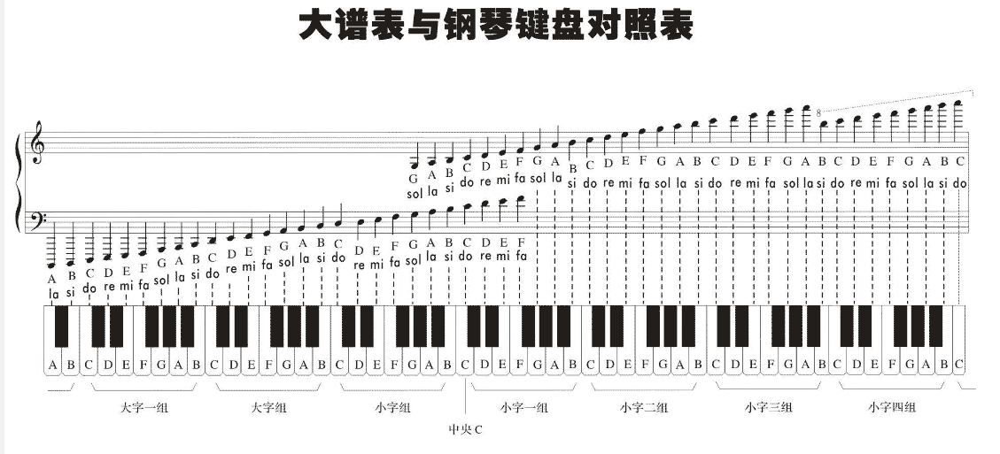

<!DOCTYPE html>
<html lang="en">

<head>
  <meta charset="utf-8" />
   
  <meta name="keywords" content="个人博客" />
   
  <meta name="viewport" content="width=device-width, initial-scale=1, maximum-scale=1" />
  <title>
    模拟音乐的频率公式 |  ꧁༺自由天空༻꧂
  </title>
  <meta name="generator" content="hexo-theme-yilia-plus">
  
  <link rel="shortcut icon" href="/favicon.ico" />
  
  
<link rel="stylesheet" href="/css/main.css">

  
  <script src="https://cdn.jsdelivr.net/npm/pace-js@1.0.2/pace.min.js"></script>
  
  

  

<link rel="alternate" href="/atom.xml" title="꧁༺自由天空༻꧂" type="application/atom+xml">
</head>

</html>

<body>
  <div id="app">
    <main class="content">
      <section class="outer">
  <article id="post-模拟音乐的频率公式" class="article article-type-post" itemscope
  itemprop="blogPost" data-scroll-reveal>

  <div class="article-inner">
    
    <header class="article-header">
       
<h1 class="article-title sea-center" style="border-left:0" itemprop="name">
  模拟音乐的频率公式
</h1>
  

    </header>
    

    
    <div class="article-meta">
      <a href="/2020/10/14/%E6%A8%A1%E6%8B%9F%E9%9F%B3%E4%B9%90%E7%9A%84%E9%A2%91%E7%8E%87%E5%85%AC%E5%BC%8F/" class="article-date">
  <time datetime="2020-10-14T02:45:23.000Z" itemprop="datePublished">2020-10-14</time>
</a>
      
  <div class="article-category">
    <a class="article-category-link" href="/categories/%E6%8A%80%E6%9C%AF/">技术</a>
  </div>

      
      
<div class="word_count">
    <span class="post-time">
        <span class="post-meta-item-icon">
            <i class="ri-quill-pen-line"></i>
            <span class="post-meta-item-text"> 字数统计:</span>
            <span class="post-count">1.5k字</span>
        </span>
    </span>

    <span class="post-time">
        &nbsp; | &nbsp;
        <span class="post-meta-item-icon">
            <i class="ri-book-open-line"></i>
            <span class="post-meta-item-text"> 阅读时长≈</span>
            <span class="post-count">7分钟</span>
        </span>
    </span>
</div>

      
    </div>
    

    
    
    <div class="tocbot"></div>


    

    
    <div class="article-entry" itemprop="articleBody">
      
      

      
      <h3 id="背景"><a href="#背景" class="headerlink" title="背景"></a>背景</h3><p>昨天在翻阅taiga源代码的时候发现了一个神奇的Windows API Beep函数, 突然想到曾经有人跟我说过可以用Beep播放一首歌曲,<br>回忆起小时候用计算器的按键音当成各种调子按下，模拟音乐的简单快乐。<br>于是我便看了这份代码播放的音乐，当点击ICON图标时播放一首orange歌曲。<br>(猜测应该是这首<a href="https://c.y.qq.com/base/fcgi-bin/u?__=9xGuYfR" target="_blank" rel="noopener">https://c.y.qq.com/base/fcgi-bin/u?__=9xGuYfR</a>)</p>
<h3 id="代码介绍"><a href="#代码介绍" class="headerlink" title="代码介绍"></a>代码介绍</h3><pre><code><figure class="highlight c++"><table><tr><td class="gutter"><pre><span class="line">1</span><br><span class="line">2</span><br><span class="line">3</span><br><span class="line">4</span><br><span class="line">5</span><br><span class="line">6</span><br><span class="line">7</span><br><span class="line">8</span><br><span class="line">9</span><br><span class="line">10</span><br><span class="line">11</span><br><span class="line">12</span><br><span class="line">13</span><br><span class="line">14</span><br><span class="line">15</span><br><span class="line">16</span><br><span class="line">17</span><br><span class="line">18</span><br><span class="line">19</span><br><span class="line">20</span><br><span class="line">21</span><br><span class="line">22</span><br><span class="line">23</span><br><span class="line">24</span><br><span class="line">25</span><br><span class="line">26</span><br><span class="line">27</span><br><span class="line">28</span><br><span class="line">29</span><br><span class="line">30</span><br><span class="line">31</span><br><span class="line">32</span><br></pre></td><td class="code"><pre><span class="line"><span class="keyword">namespace</span> BeepMusic</span><br><span class="line">&#123;</span><br><span class="line">    <span class="keyword">constexpr</span> <span class="built_in">std</span>::<span class="built_in">array</span>&lt;<span class="built_in">std</span>::pair&lt;<span class="keyword">int</span>, <span class="keyword">float</span>&gt;, <span class="number">32</span>&gt; notes&#123;&#123;</span><br><span class="line">        &#123;<span class="number">84</span>, <span class="number">1</span> / <span class="number">2.f</span>&#125;, &#123;<span class="number">84</span>, <span class="number">1</span> / <span class="number">4.f</span>&#125;, &#123;<span class="number">86</span>, <span class="number">1</span> / <span class="number">8.f</span>&#125;, &#123;<span class="number">84</span>, <span class="number">1</span> / <span class="number">4.f</span>&#125;,</span><br><span class="line">        &#123;<span class="number">82</span>, <span class="number">1</span> / <span class="number">4.f</span>&#125;, &#123;<span class="number">81</span>, <span class="number">1</span> / <span class="number">4.f</span>&#125;, &#123;<span class="number">77</span>, <span class="number">1</span> / <span class="number">8.f</span>&#125;, &#123;<span class="number">79</span>, <span class="number">1</span> / <span class="number">8.f</span>&#125;,</span><br><span class="line">        &#123;<span class="number">72</span>, <span class="number">1</span> / <span class="number">8.f</span>&#125;, &#123;<span class="number">77</span>, <span class="number">1</span> / <span class="number">2.f</span>&#125;, &#123;<span class="number">76</span>, <span class="number">1</span> / <span class="number">8.f</span>&#125;, &#123;<span class="number">77</span>, <span class="number">1</span> / <span class="number">8.f</span>&#125;,</span><br><span class="line">        &#123;<span class="number">79</span>, <span class="number">1</span> / <span class="number">8.f</span>&#125;, &#123;<span class="number">81</span>, <span class="number">1</span> / <span class="number">4.f</span>&#125;, &#123;<span class="number">79</span>, <span class="number">1</span> / <span class="number">4.f</span>&#125;, &#123;<span class="number">77</span>, <span class="number">1</span> / <span class="number">4.f</span>&#125;,</span><br><span class="line">        &#123;<span class="number">79</span>, <span class="number">1</span> / <span class="number">4.f</span>&#125;, &#123;<span class="number">81</span>, <span class="number">1</span> / <span class="number">8.f</span>&#125;, &#123;<span class="number">84</span>, <span class="number">1</span> / <span class="number">2.f</span>&#125;, &#123;<span class="number">84</span>, <span class="number">1</span> / <span class="number">4.f</span>&#125;,</span><br><span class="line">        &#123;<span class="number">86</span>, <span class="number">1</span> / <span class="number">8.f</span>&#125;, &#123;<span class="number">84</span>, <span class="number">1</span> / <span class="number">4.f</span>&#125;, &#123;<span class="number">82</span>, <span class="number">1</span> / <span class="number">4.f</span>&#125;, &#123;<span class="number">81</span>, <span class="number">1</span> / <span class="number">4.f</span>&#125;,</span><br><span class="line">        &#123;<span class="number">77</span>, <span class="number">1</span> / <span class="number">8.f</span>&#125;, &#123;<span class="number">79</span>, <span class="number">1</span> / <span class="number">8.f</span>&#125;, &#123;<span class="number">72</span>, <span class="number">1</span> / <span class="number">8.f</span>&#125;, &#123;<span class="number">77</span>, <span class="number">1</span> / <span class="number">2.f</span>&#125;,</span><br><span class="line">        &#123;<span class="number">76</span>, <span class="number">1</span> / <span class="number">8.f</span>&#125;, &#123;<span class="number">77</span>, <span class="number">1</span> / <span class="number">8.f</span>&#125;, &#123;<span class="number">76</span>, <span class="number">1</span> / <span class="number">8.f</span>&#125;, &#123;<span class="number">74</span>, <span class="number">1</span> / <span class="number">2.f</span>&#125;,</span><br><span class="line">    &#125;&#125;;</span><br><span class="line"></span><br><span class="line">    <span class="function"><span class="keyword">void</span> <span class="title">playOrange</span><span class="params">()</span></span></span><br><span class="line"><span class="function">    </span>&#123;</span><br><span class="line">        <span class="keyword">constexpr</span> <span class="keyword">auto</span> get_frequency = [](<span class="keyword">const</span> <span class="keyword">int</span> note) &#123;</span><br><span class="line">            <span class="keyword">if</span> (note &lt; <span class="number">0</span> || note &gt; <span class="number">119</span>) <span class="keyword">return</span> <span class="number">-1.0f</span>;</span><br><span class="line">            <span class="keyword">return</span> <span class="number">440.0f</span> *</span><br><span class="line">                <span class="built_in">std</span>::<span class="built_in">pow</span>(<span class="number">2.0f</span>, <span class="keyword">static_cast</span>&lt;<span class="keyword">float</span>&gt;(note - <span class="number">57</span>) / <span class="number">12.0f</span>);</span><br><span class="line">        &#125;;</span><br><span class="line"></span><br><span class="line">        <span class="keyword">constexpr</span> <span class="keyword">auto</span> get_duration = [](<span class="keyword">const</span> <span class="keyword">float</span> duration) &#123;</span><br><span class="line">            <span class="keyword">return</span> <span class="number">1600</span> * duration;</span><br><span class="line">        &#125;;</span><br><span class="line"></span><br><span class="line">        <span class="keyword">for</span> (<span class="keyword">const</span> <span class="keyword">auto</span>&amp; [note, duration] : notes)</span><br><span class="line">        &#123;</span><br><span class="line">            ::Beep(<span class="keyword">static_cast</span>&lt;DWORD&gt;(get_frequency(note)),</span><br><span class="line">                <span class="keyword">static_cast</span>&lt;DWORD&gt;(get_duration(duration)));</span><br><span class="line">        &#125;</span><br><span class="line">    &#125;</span><br><span class="line">&#125;  <span class="comment">// namespace BeepMusic</span></span><br></pre></td></tr></table></figure></code></pre>
<p>其中有个公式<br>    $$<br>    440 \times 2 ^ {\frac{(x-57)}{12}}<br>    $$<br> 哪来的？</p>
<p>经反复查找资料<br>    MIDI代表乐器数字接口。该标准指定了软件和电子设备可以传输和接收音乐的方式。</p>
<p>另外一个公式在开源项目 audacity<br>    $$<br>    440 \times 2 ^ {\frac{(x-69)}{12}}<br>    $$</p>
<p>这个2个公式本身是什么逻辑，哪里来的，很难猜到，需要了解乐理知识</p>
<h3 id="乐理知识"><a href="#乐理知识" class="headerlink" title="乐理知识"></a>乐理知识</h3><ul>
<li><p>乐音体系: 有固定音高的音（乐音）的总和，叫做乐音体系。 一般的钢琴 88琴键 $A_2 - C^5$</p>
</li>
<li><p>音级： 在乐音体系中的每个音，就叫做“音级”。音级包括有基本音级和变化音级两种。 自然</p>
</li>
<li><p>音列：将乐音体系中的音，依照音高关系和次序，由低到高（上行）或由高向低（下行）排列起来，叫做“音列”。</p>
</li>
<li><p>半音： 在整个乐音体系中，相邻的两个音级（不论基本音级或变化音级）之间的音高关系就是“半音”，半音是音高关系中的最小单位。用分数1/2来标记。</p>
</li>
<li><p>全音： 在乐音体系中，两个半音相加，就形成了全音。用阿拉伯数字1来标记。</p>
</li>
<li><p>音名： 在乐音体系中，七个具有独立名称的音级叫做基本音级（也叫自然音级） “C D E F G A B”  钢琴白键都是基本音级</p>
</li>
<li><p>变化音级： # 升音级  $^#C$ 升半音 , b 降音级 $^bD$ 降半音 , # 重升音级  $^×E$ 升Q全音 , bb 重降音级 $^{bb}F$ 降半音</p>
</li>
<li><p>大谱钢琴键盘对照表   </p>
</li>
</ul>
<h4 id="标准音"><a href="#标准音" class="headerlink" title="标准音"></a>标准音</h4><p>中央C 440Hz  第一国际高音<br>小字a $a^1 = 435 hz$  第二国际高音  演奏会音高</p>
<h4 id="音律关系"><a href="#音律关系" class="headerlink" title="音律关系"></a>音律关系</h4><h5 id="纯律"><a href="#纯律" class="headerlink" title="纯律"></a>纯律</h5><p>西洋乐器</p>
<h5 id="五度相生律"><a href="#五度相生律" class="headerlink" title="五度相生律"></a>五度相生律</h5><p>五度相生律又叫“三分损益律”，它是按纯五度的关系向上或向下推算的办法，来找出整个各个音级的精确高度。即是用分音列中第二分音与第三分音之间的音高关系，连续相生而求得出的各个音级的准确音高。 民族乐器。</p>
<h5 id="十二平均律"><a href="#十二平均律" class="headerlink" title="十二平均律"></a>十二平均律</h5><p>将纯八度分成十二个均等的部分的音律叫做十二平均律。其中每一个部分就是一个半音，每个半音的距离是相等的，它的最大好处是转调方便。十二平均律多用在钢琴、手风琴、电子琴、风琴。</p>
<h3 id="最终代码公式"><a href="#最终代码公式" class="headerlink" title="最终代码公式"></a>最终代码公式</h3><pre><code><figure class="highlight c++"><table><tr><td class="gutter"><pre><span class="line">1</span><br><span class="line">2</span><br><span class="line">3</span><br><span class="line">4</span><br><span class="line">5</span><br><span class="line">6</span><br></pre></td><td class="code"><pre><span class="line"><span class="keyword">float</span> midi[<span class="number">127</span>];</span><br><span class="line"><span class="keyword">int</span> a = <span class="number">440</span>; <span class="comment">// a is 440 hz...</span></span><br><span class="line"><span class="keyword">for</span> (<span class="keyword">int</span> x = <span class="number">0</span>; x &lt; <span class="number">127</span>; ++x)</span><br><span class="line">&#123;</span><br><span class="line">    midi[x] = (a / <span class="number">32</span>) * (<span class="number">2</span> ^ ((x - <span class="number">9</span>) / <span class="number">12</span>));</span><br><span class="line">&#125;</span><br></pre></td></tr></table></figure></code></pre>
<p>公式<br>    $$<br>    \frac{440}{32} \times 2 ^ {\frac{(x-9)}{12}}<br>    $$</p>
<h3 id="附录"><a href="#附录" class="headerlink" title="附录"></a>附录</h3><pre> MIDI                   MIDI                   MIDI
 Note     Frequency      Note   Frequency       Note   Frequency
 C1  0    8.1757989156    12    16.3515978313    24    32.7031956626
 Db  1    8.6619572180    13    17.3239144361    25    34.6478288721
 D   2    9.1770239974    14    18.3540479948    26    36.7080959897
 Eb  3    9.7227182413    15    19.4454364826    27    38.8908729653
 E   4   10.3008611535    16    20.6017223071    28    41.2034446141
 F   5   10.9133822323    17    21.8267644646    29    43.6535289291
 Gb  6   11.5623257097    18    23.1246514195    30    46.2493028390
 G   7   12.2498573744    19    24.4997147489    31    48.9994294977
 Ab  8   12.9782717994    20    25.9565435987    32    51.9130871975
 A   9   13.7500000000    21    27.5000000000    33    55.0000000000
 Bb  10  14.5676175474    22    29.1352350949    34    58.2704701898
 B   11  15.4338531643    23    30.8677063285    35    61.7354126570

 C4  36  65.4063913251    48   130.8127826503    60   261.6255653006
 Db  37  69.2956577442    49   138.5913154884    61   277.1826309769
 D   38  73.4161919794    50   146.8323839587    62   293.6647679174
 Eb  39  77.7817459305    51   155.5634918610    63   311.1269837221
 E   40  82.4068892282    52   164.8137784564    64   329.6275569129
 F   41  87.3070578583    53   174.6141157165    65   349.2282314330
 Gb  42  92.4986056779    54   184.9972113558    66   369.9944227116
 G   43  97.9988589954    55   195.9977179909    67   391.9954359817
 Ab  44  103.8261743950   56   207.6523487900    68   415.3046975799
 A   45  110.0000000000   57   220.0000000000    69   440.0000000000
 Bb  46  116.5409403795   58   233.0818807590    70   466.1637615181
 B   47  123.4708253140   59   246.9416506281    71   493.8833012561

 C7  72  523.2511306012   84  1046.5022612024    96  2093.0045224048
 Db  73  554.3652619537   85  1108.7305239075    97  2217.4610478150
 D   74  587.3295358348   86  1174.6590716696    98  2349.3181433393
 Eb  75  622.2539674442   87  1244.5079348883    99  2489.0158697766
 E   76  659.2551138257   88  1318.5102276515   100  2637.0204553030
 F   77  698.4564628660   89  1396.9129257320   101  2793.8258514640
 Gb  78  739.9888454233   90  1479.9776908465   102  2959.9553816931
 G   79  783.9908719635   91  1567.9817439270   103  3135.9634878540
 Ab  80  830.6093951599   92  1661.2187903198   104  3322.4375806396
 A   81  880.0000000000   93  1760.0000000000   105  3520.0000000000
 Bb  82  932.3275230362   94  1864.6550460724   106  3729.3100921447
 B   83  987.7666025122   95  1975.5332050245   107  3951.0664100490

 C10 108 4186.0090448096  120  8372.0180896192
 Db  109 4434.9220956300  121  8869.8441912599
 D   110 4698.6362866785  122  9397.2725733570
 Eb  111 4978.0317395533  123  9956.0634791066
 E   112 5274.0409106059  124 10548.0818212118
 F   113 5587.6517029281  125 11175.3034058561
 Gb  114 5919.9107633862  126 11839.8215267723
 G   115 6271.9269757080  127 12543.8539514160
 Ab  116 6644.8751612791
 A   117 7040.0000000000
 Bb  118 7458.6201842894
 B   119 7902.1328200980
</pre>
      
      <!-- reward -->
      
      <div id="reward-btn">
        打赏
      </div>
      
    </div>
    
    
      <!-- copyright -->
      
        <div class="declare">
          <ul class="post-copyright">
            <li>
              <i class="ri-copyright-line"></i>
              <strong>版权声明： </strong s>
              本博客所有文章除特别声明外，均采用 <a href="https://www.apache.org/licenses/LICENSE-2.0.html" rel="external nofollow"
                target="_blank">Apache License 2.0</a> 许可协议。转载请注明出处！
            </li>
          </ul>
        </div>
        
    <footer class="article-footer">
      
          
<div class="share-btn">
      <span class="share-sns share-outer">
        <i class="ri-share-forward-line"></i>
        分享
      </span>
      <div class="share-wrap">
        <i class="arrow"></i>
        <div class="share-icons">
          
          <a class="weibo share-sns" href="javascript:;" data-type="weibo">
            <i class="ri-weibo-fill"></i>
          </a>
          <a class="weixin share-sns wxFab" href="javascript:;" data-type="weixin">
            <i class="ri-wechat-fill"></i>
          </a>
          <a class="qq share-sns" href="javascript:;" data-type="qq">
            <i class="ri-qq-fill"></i>
          </a>
          <a class="douban share-sns" href="javascript:;" data-type="douban">
            <i class="ri-douban-line"></i>
          </a>
          <!-- <a class="qzone share-sns" href="javascript:;" data-type="qzone">
            <i class="icon icon-qzone"></i>
          </a> -->
          
          <a class="facebook share-sns" href="javascript:;" data-type="facebook">
            <i class="ri-facebook-circle-fill"></i>
          </a>
          <a class="twitter share-sns" href="javascript:;" data-type="twitter">
            <i class="ri-twitter-fill"></i>
          </a>
          <a class="google share-sns" href="javascript:;" data-type="google">
            <i class="ri-google-fill"></i>
          </a>
        </div>
      </div>
</div>

<div class="wx-share-modal">
    <a class="modal-close" href="javascript:;"><i class="ri-close-circle-line"></i></a>
    <p>扫一扫，分享到微信</p>
    <div class="wx-qrcode">
      
    </div>
</div>

<div id="share-mask"></div>
      
      
  <ul class="article-tag-list" itemprop="keywords"><li class="article-tag-list-item"><a class="article-tag-list-link" href="/tags/c/" rel="tag">c++</a></li><li class="article-tag-list-item"><a class="article-tag-list-link" href="/tags/%E9%9F%B3%E4%B9%90/" rel="tag">音乐</a></li></ul>


    </footer>

  </div>

  
  
  <nav class="article-nav">
    
      <a href="/2020/10/20/%E9%99%88%E7%A1%95%E7%9A%84cpp%E5%B7%A5%E7%A8%8B%E5%AE%9E%E8%B7%B5%E6%80%BB%E7%BB%93/" class="article-nav-link">
        <strong class="article-nav-caption">上一篇</strong>
        <div class="article-nav-title">
          
            陈硕的cpp工程实践总结
          
        </div>
      </a>
    
    
      <a href="/2020/09/10/Windows%E7%A8%8B%E5%BA%8F%E8%AF%8A%E6%96%AD%E6%8A%80%E6%9C%AF/" class="article-nav-link">
        <strong class="article-nav-caption">下一篇</strong>
        <div class="article-nav-title">Windows程序诊断技术</div>
      </a>
    
  </nav>


  

  
  
<!-- valine评论 -->
<div id="vcomments-box">
    <div id="vcomments">
    </div>
</div>
<script src="//cdn1.lncld.net/static/js/3.0.4/av-min.js"></script>
<script src='https://cdn.jsdelivr.net/npm/valine@1.3.10/dist/Valine.min.js'></script>
<script>
    new Valine({
        el: '#vcomments',
        app_id: 'R2fjeysa89IfSlHMYhiFzb3s-gzGzoHsz',
        app_key: 'd0j1M9F5S1SodlcqdYt1Uf5m',
        path: window.location.pathname,
        notify: 'false',
        verify: 'false',
        avatar: 'mp',
        placeholder: '给我的文章加点评论吧~',
        recordIP: true
    });
    const infoEle = document.querySelector('#vcomments .info');
    if (infoEle && infoEle.childNodes && infoEle.childNodes.length > 0) {
        infoEle.childNodes.forEach(function (item) {
            item.parentNode.removeChild(item);
        });
    }
</script>
<style>
    #vcomments-box {
        padding: 5px 30px;
    }

    @media screen and (max-width: 800px) {
        #vcomments-box {
            padding: 5px 0px;
        }
    }

    #vcomments-box #vcomments {
        background-color: #fff;
    }

    .v .vlist .vcard .vh {
        padding-right: 20px;
    }

    .v .vlist .vcard {
        padding-left: 10px;
    }
</style>

  

  
  
  

</article>
</section>
      <footer class="footer">
  <div class="outer">
    <ul class="list-inline">
      <li>
        &copy;
        2020-2021
        一潭清泓
      </li>
      <li>
        
        Powered by
        
        
        <a href="https://hexo.io" target="_blank">Hexo</a> Theme <a href="https://github.com/Shen-Yu/hexo-theme-ayer" target="_blank">Ayer</a>
        
      </li>
    </ul>
    <ul class="list-inline">
      <li>
        
        
        <span>
  <i>PV:<span id="busuanzi_value_page_pv"></span></i>
  <i>UV:<span id="busuanzi_value_site_uv"></span></i>
</span>
        
      </li>
      
      <li>
        <!-- cnzz统计 -->
        
      </li>
    </ul>
  </div>
</footer>
      <div class="to_top">
        <div class="totop" id="totop">
  <i class="ri-arrow-up-line"></i>
</div>
      </div>
    </main>
    <aside class="sidebar">
      <button class="navbar-toggle"></button>
<nav class="navbar">
  
  <div class="logo">
    <a href="/"></a>
  </div>
  
  <ul class="nav nav-main">
    
    <li class="nav-item">
      <a class="nav-item-link" href="/">主页</a>
    </li>
    
    <li class="nav-item">
      <a class="nav-item-link" href="/archives">归档</a>
    </li>
    
    <li class="nav-item">
      <a class="nav-item-link" href="/categories">分类</a>
    </li>
    
    <li class="nav-item">
      <a class="nav-item-link" href="/tags">标签</a>
    </li>
    
    <li class="nav-item">
      <a class="nav-item-link" href="/about">关于</a>
    </li>
    
  </ul>
</nav>
<nav class="navbar navbar-bottom">
  <ul class="nav">
    <li class="nav-item">
      
      <a class="nav-item-link nav-item-search"  title="搜索">
        <i class="ri-search-line"></i>
      </a>
      
      
      <a class="nav-item-link" target="_blank" href="/atom.xml" title="RSS Feed">
        <i class="ri-rss-line"></i>
      </a>
      
    </li>
  </ul>
</nav>
<div class="search-form-wrap">
  <div class="local-search local-search-plugin">
  <input type="search" id="local-search-input" class="local-search-input" placeholder="Search...">
  <div id="local-search-result" class="local-search-result"></div>
</div>
</div>
    </aside>
    <div id="mask"></div>

<!-- #reward -->
<div id="reward">
  <span class="close"><i class="ri-close-line"></i></span>
  <p class="reward-p"><i class="ri-cup-line"></i>请我喝杯咖啡吧~</p>
  <div class="reward-box">
    
    <div class="reward-item">
      
      <span class="reward-type">支付宝</span>
    </div>
    
    
    <div class="reward-item">
      
      <span class="reward-type">微信</span>
    </div>
    
  </div>
</div>
    
<script src="/js/jquery-2.0.3.min.js"></script>


<script src="/js/share.js"></script>


<script src="/js/lazyload.min.js"></script>


<script>
  try {
    var typed = new Typed("#subtitle", {
      strings: ['Don&#39;t Worry, Be Happy！', '聚沙成山 汇溪成海', '既然相信未来,何不抓住现在？'],
      startDelay: 0,
      typeSpeed: 100,
      loop: true,
      backSpeed: 50,
      showCursor: true
    });
  } catch (err) {
  }

</script>


<script src="/js/tocbot.min.js"></script>

<script>
  // Tocbot_v4.7.0  http://tscanlin.github.io/tocbot/
  tocbot.init({
    tocSelector: '.tocbot',
    contentSelector: '.article-entry',
    headingSelector: 'h1, h2, h3, h4, h5, h6',
    hasInnerContainers: true,
    scrollSmooth: true,
    scrollContainer: 'main',
    positionFixedSelector: '.tocbot',
    positionFixedClass: 'is-position-fixed',
    fixedSidebarOffset: 'auto',
    onClick: (e) => {
      $('.toc-link').removeClass('is-active-link');
      $(`a[href=${e.target.hash}]`).addClass('is-active-link');
      $(e.target.hash).scrollIntoView();
      return false;
    }
  });
</script>


<script src="https://cdn.jsdelivr.net/npm/jquery-modal@0.9.2/jquery.modal.min.js"></script>
<link rel="stylesheet" href="https://cdn.jsdelivr.net/npm/jquery-modal@0.9.2/jquery.modal.min.css">
<script src="https://cdn.jsdelivr.net/npm/justifiedGallery@3.7.0/dist/js/jquery.justifiedGallery.min.js"></script>

<script src="/js/ayer.js"></script>


<!-- Root element of PhotoSwipe. Must have class pswp. -->
<div class="pswp" tabindex="-1" role="dialog" aria-hidden="true">

    <!-- Background of PhotoSwipe. 
         It's a separate element as animating opacity is faster than rgba(). -->
    <div class="pswp__bg"></div>

    <!-- Slides wrapper with overflow:hidden. -->
    <div class="pswp__scroll-wrap">

        <!-- Container that holds slides. 
            PhotoSwipe keeps only 3 of them in the DOM to save memory.
            Don't modify these 3 pswp__item elements, data is added later on. -->
        <div class="pswp__container">
            <div class="pswp__item"></div>
            <div class="pswp__item"></div>
            <div class="pswp__item"></div>
        </div>

        <!-- Default (PhotoSwipeUI_Default) interface on top of sliding area. Can be changed. -->
        <div class="pswp__ui pswp__ui--hidden">

            <div class="pswp__top-bar">

                <!--  Controls are self-explanatory. Order can be changed. -->

                <div class="pswp__counter"></div>

                <button class="pswp__button pswp__button--close" title="Close (Esc)"></button>

                <button class="pswp__button pswp__button--share" style="display:none" title="Share"></button>

                <button class="pswp__button pswp__button--fs" title="Toggle fullscreen"></button>

                <button class="pswp__button pswp__button--zoom" title="Zoom in/out"></button>

                <!-- Preloader demo http://codepen.io/dimsemenov/pen/yyBWoR -->
                <!-- element will get class pswp__preloader--active when preloader is running -->
                <div class="pswp__preloader">
                    <div class="pswp__preloader__icn">
                        <div class="pswp__preloader__cut">
                            <div class="pswp__preloader__donut"></div>
                        </div>
                    </div>
                </div>
            </div>

            <div class="pswp__share-modal pswp__share-modal--hidden pswp__single-tap">
                <div class="pswp__share-tooltip"></div>
            </div>

            <button class="pswp__button pswp__button--arrow--left" title="Previous (arrow left)">
            </button>

            <button class="pswp__button pswp__button--arrow--right" title="Next (arrow right)">
            </button>

            <div class="pswp__caption">
                <div class="pswp__caption__center"></div>
            </div>

        </div>

    </div>

</div>

<link rel="stylesheet" href="https://cdn.jsdelivr.net/npm/photoswipe@4.1.3/dist/photoswipe.min.css">
<link rel="stylesheet" href="https://cdn.jsdelivr.net/npm/photoswipe@4.1.3/dist/default-skin/default-skin.min.css">
<script src="https://cdn.jsdelivr.net/npm/photoswipe@4.1.3/dist/photoswipe.min.js"></script>
<script src="https://cdn.jsdelivr.net/npm/photoswipe@4.1.3/dist/photoswipe-ui-default.min.js"></script>

<script>
    function viewer_init() {
        let pswpElement = document.querySelectorAll('.pswp')[0];
        let $imgArr = document.querySelectorAll(('.article-entry img:not(.reward-img)'))

        $imgArr.forEach(($em, i) => {
            $em.onclick = () => {
                // slider展开状态
                // todo: 这样不好，后面改成状态
                if (document.querySelector('.left-col.show')) return
                let items = []
                $imgArr.forEach(($em2, i2) => {
                    let img = $em2.getAttribute('data-idx', i2)
                    let src = $em2.getAttribute('data-target') || $em2.getAttribute('src')
                    let title = $em2.getAttribute('alt')
                    // 获得原图尺寸
                    const image = new Image()
                    image.src = src
                    items.push({
                        src: src,
                        w: image.width || $em2.width,
                        h: image.height || $em2.height,
                        title: title
                    })
                })
                var gallery = new PhotoSwipe(pswpElement, PhotoSwipeUI_Default, items, {
                    index: parseInt(i)
                });
                gallery.init()
            }
        })
    }
    viewer_init()
</script>


<script type="text/x-mathjax-config">
  MathJax.Hub.Config({
      tex2jax: {
          inlineMath: [ ['$','$'], ["\\(","\\)"]  ],
          processEscapes: true,
          skipTags: ['script', 'noscript', 'style', 'textarea', 'pre', 'code']
      }
  });

  MathJax.Hub.Queue(function() {
      var all = MathJax.Hub.getAllJax(), i;
      for(i=0; i < all.length; i += 1) {
          all[i].SourceElement().parentNode.className += ' has-jax';
      }
  });
</script>

<script src="https://cdn.jsdelivr.net/npm/mathjax@2.7.6/unpacked/MathJax.js?config=TeX-AMS-MML_HTMLorMML"></script>
<script>
  var ayerConfig = {
    mathjax: true
  }
</script>


<script src="/js/busuanzi-2.3.pure.min.js"></script>


<script type="text/javascript" src="https://js.users.51.la/20544303.js"></script>

    
    <div id="music">
    
    
    
    <iframe frameborder="no" border="1" marginwidth="0" marginheight="0" width="200" height="52"
        src="//music.163.com/outchain/player?type=2&id=5110132&auto=1&height=32"></iframe>
</div>

<style>
    #music {
        position: fixed;
        right: 15px;
        bottom: 0;
        z-index: 998;
    }
</style>
    
  </div>
</body>

</html>